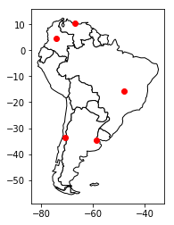

Geo Pandas Simple
import pandas as pd
import geopandas
import matplotlib.pyplot as pltdf = pd.DataFrame(
{'City': ['Buenos Aires', 'Brasilia', 'Santiago', 'Bogota', 'Caracas'],
'Country': ['Argentina', 'Brazil', 'Chile', 'Colombia', 'Venezuela'],
'Latitude': [-34.58, -15.78, -33.45, 4.60, 10.48],
'Longitude': [-58.66, -47.91, -70.66, -74.08, -66.86]})gdf = geopandas.GeoDataFrame(
df, geometry=geopandas.points_from_xy(df.Longitude, df.Latitude))print(gdf.head()) City Country Latitude Longitude geometry
0 Buenos Aires Argentina -34.58 -58.66 POINT (-58.66 -34.58)
1 Brasilia Brazil -15.78 -47.91 POINT (-47.91 -15.78)
2 Santiago Chile -33.45 -70.66 POINT (-70.66 -33.45)
3 Bogota Colombia 4.60 -74.08 POINT (-74.08 4.6)
4 Caracas Venezuela 10.48 -66.86 POINT (-66.86 10.48)
world = geopandas.read_file(geopandas.datasets.get_path('naturalearth_lowres'))
# We restrict to South America.
ax = world[world.continent == 'South America'].plot(
color='white', edgecolor='black')
# We can now plot our GeoDataFrame.
gdf.plot(ax=ax, color='red')
plt.show()